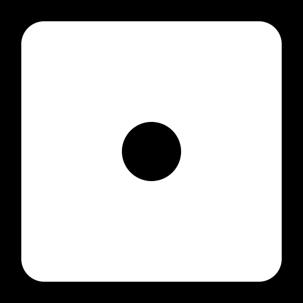

Score
0

click to roll
0
click to roll
Choose a number from 1 to 6 by clicking one of the buttons. Then click the "Roll Dice" button. If the dice shows the number you selected, you earn +1 point. Otherwise, your score stays the same. Use the "Reset" button to reset your score anytime. Good luck!